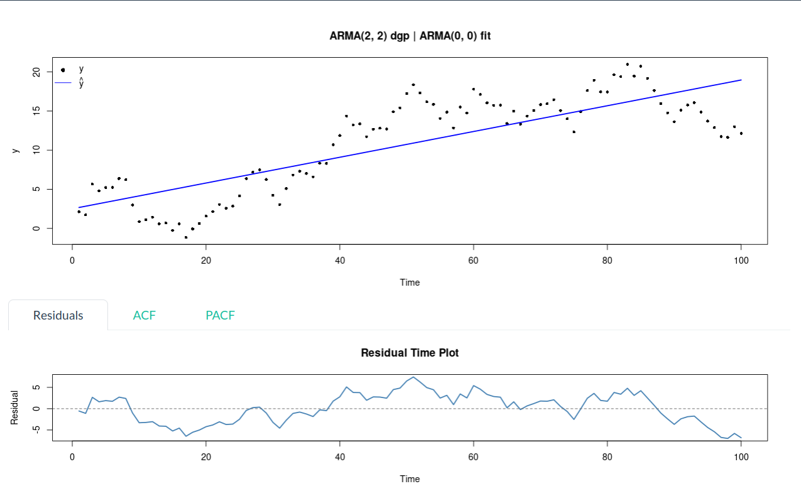
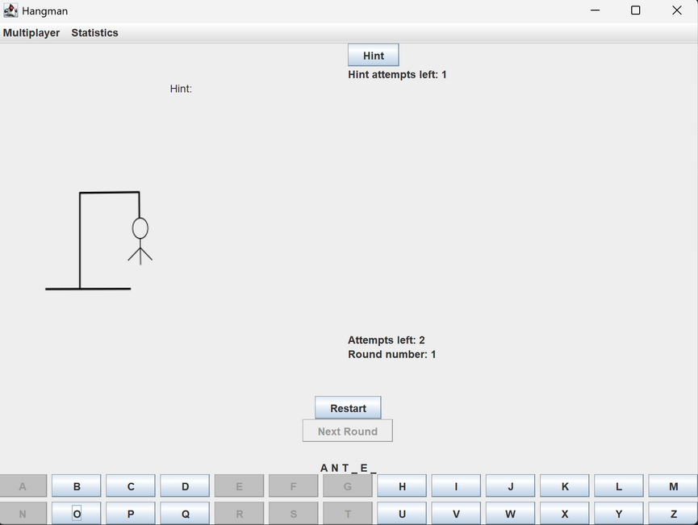

Hi, I'm Kevin Joseph. I'm a third-year student at the University of Toronto, and I'm currently pursuing a double-major in statistics and computer science.
Stoos, Switzerland - August 2024
Previously, I worked at CIBC as an application developer and at FanVerse as a data science intern. Currently, I'm reading Flash Boys by Michael Lewis and Dark Pools by Scott Patterson. I'm also building a toy SQLite engine from scratch in C.

FanVerse is a B2B SaaS fan intelligence platform focused on women's sports analytics. The technical work covered full-stack infrastructure including database architecture with Supabase Postgres, a batch data ingestion pipeline, a Next.js frontend with a FastAPI backend, fan segmentation logic, and an AI-powered query panel built on the Claude and Gemini APIs.
At CIBC, the work focused on building and optimizing internal data pipelines using Python and the Azure SDK. This included an asynchronous producer-consumer pipeline for processing large volumes of Azure Blob Storage data, an ETL pipeline for extracting and filtering log events, and automated aggregation of data from 50+ API endpoints into standardized Excel reports using Pandas.

An R package built to standard conventions, with S3 class implementations, roxygen2-style documentation, and testthat unit tests covering each model family. It also includes proper vignettes walking through the AR, MA, and linear regression workflows, making it more of a reproducible, documented statistical tool than just a collection of scripts.

A real-time collaborative proof editor built for discrete math students, where an AI backend (Gemini) analyzes your writing and flags logical errors, structural issues, and grammatical problems inline as you type. It's a full-stack monorepo with a Next.js frontend, Socket.IO for live collaboration, and a FastAPI ML service connected via a Redis queue. Won best use of DigitalOcean at EmberHacks 2025.

A Java Hangman game built around Clean Architecture, where each layer (entities, use cases, interface adapters, and frameworks) has strict dependency rules and single responsibilities. It leans heavily on OOP design patterns like State for round lifecycle management, Builder for app wiring, and Observer for view updates, with proper DAO interfaces keeping the data layer swappable. Written as a group project for CSC207, so the focus was as much on getting the architecture right as on the game itself.
Contact
kevnjoseph42@gmail.com